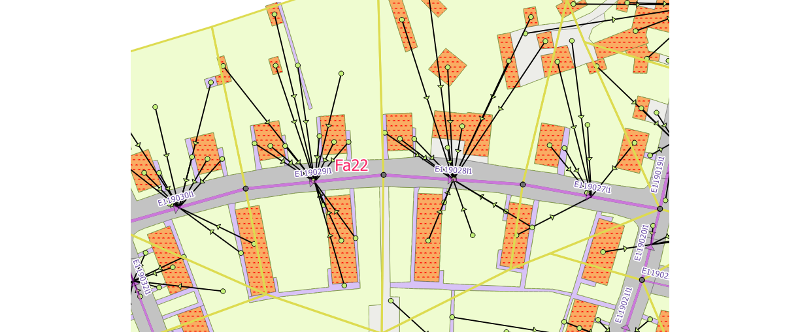
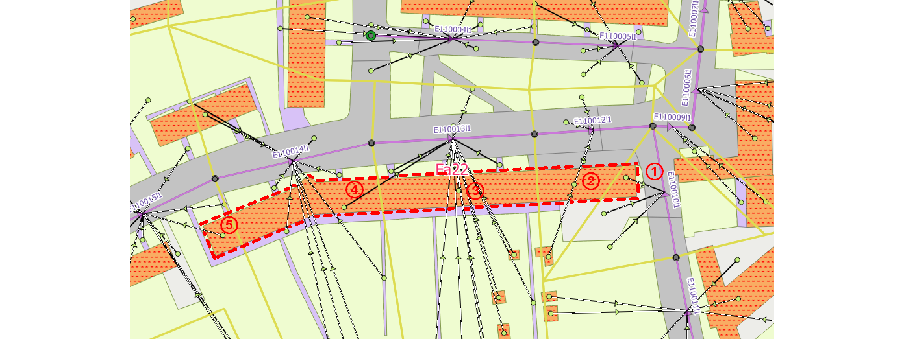
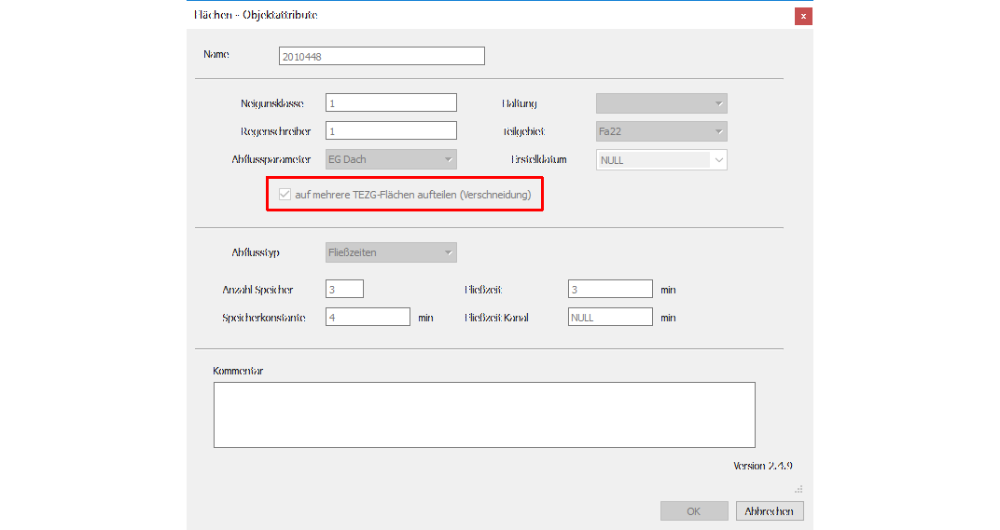
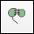
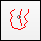
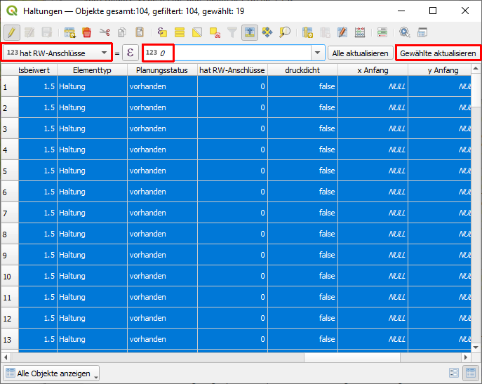
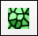
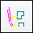
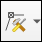

Arbeiten mit Flächen
Verarbeitung von befestigten und unbefestigten Flächen
Abflusswirksame Flächen, z. B. Dachflächen, Parkplätze, Straßen, werden in QKan in der Tabelle „flaechen“ verwaltet. Diese werden mit Hilfe des Attributs „abflussparameter“ klassifiziert, und in der entsprechenden Tabelle „abflussparameter“ sind die für die hydraulische Berechnung benötigten Parameter gespeichert. In dieser Tabelle ist wiederum ein Attribut „bodenklasse“ enthalten, das für durchlässige Flächen die Versickerungsparameter enthält. Unbefestigte Flächen sind in QKan dadurch gekennzeichnet, dass entweder keine Bodenklasse oder aber eine Bodenklasse zugeordnet ist, deren Durchlässigkeit 0 ist.
Grundprinzip
Die Zuordnung der abflusswirksamen Flächen zu den Haltungen des Kanalnetzes stellt bei der Vorbereitung einer hydrodynamischen Simulation einen aufwändigen Arbeitsschritt dar. Deshalb enthält QKan Funktionen zur automatischen Verknüpfung und zur Plausibilitäskontrolle.
Abbildung: Anbindungen von Flächen an Haltungen
Die abflusswirksamen Flächen werden mittels Linien mit den Haltungen verbunden, die von einem Punkt innerhalb der jeweiligen Fläche zur Haltung führen und im Layer „Anbindungen Flächen“ (QKan-Tabelle „linkfl“) gespeichert werden.
Weiterhin können bei der Flächenverarbeitung sogenannte Haltungsflächen (QKan-Tabelle „Teilgebiete“) berücksichtigt werden, die entweder anhand der Geometrie und gegebenenfalls unter Berücksichtigung des Geländegefälles konstruiert oder aus Flurstücken erzeugt worden sind. Damit ist es möglich, große Flächen (z. B. große Gebäude), die sich über mehrere Flurstücke erstrecken, automatisch aufzuteilen. Außerdem können automatisch unbefestigte Flächen aus den freien Flächen zwischen den befestigten Flächen erzeugt werden.
Es wird unterschieden zwischen Flächen, die als ganzes zugeordnet werden und großen Flächen, die sich über mehrere Haltungsflächen erstrecken und deshalb aufgeteilt werden müssen. Für diese muss der Anwender in der Tabelle „flaechen“ das Attribut „aufteilen“ aktivieren bzw. „ja“ eintragen. In diesem Fall wird für jedes Teilstück, das in einer anderen Haltungsfläche liegt, eine eigene Verbindungslinie angelegt.
Abbildung: Anbindung einer aufgeteilten Fläche
Abbildung: Formular Flächen (hervorgehoben: Attribut „aufteilen“)
Die Verbindungslinien können jederzeit manuell nachbearbeitet, ergänzt oder gelöscht werden. Maßgebend für den Anwender sind ausschließlich die sichtbaren Verbindungslinien!
Der Algorithmus ist so angelegt, dass die abflusswirksamen Flächen nach dem Import aus einem externen Datenbestand während der gesamten Bearbeitung im Original erhalten bleiben. Sie brauchen also nicht vorher durch den Anwender aufgeteilt zu werden. Der Anwender sollte die Flächen lediglich so vorbereiten, dass keine Überschneidungen und „Löcher“ mehr vorhanden sind, wozu QGIS mehrere Werkzeuge enthält.
Erst beim Datenexport in das Simulationsprogramm wird die Aufteilung der mit dem Attribut „aufteilen“ markierten Flächen mittels Verschneidung mit den Haltungsflächen vorgenommen. Das hat den Vorteil, dass der Anwender jederzeit Änderungen an den Flächen, Haltungsflächen oder Kanalnetzdaten vornehmen kann, um dann erneut die Daten in das Simulationsprogramm zu exportieren.
Teilgebiete
Bei größeren Entwässerungsnetzen ist es hilfreich, die Bearbeitung nacheinander für mehrere Teilgebiete vorzunehmen. In QKan dient dazu ein entsprechender Layer „Teilgebiete“ (QKan-Tabelle „teilgebiete“). Alle für die Flächenaufteilung verwendeten Layer enthalten ein entsprechendes Attribut, mit dem die automatische Erzeugung der Verbindungslinien eines oder mehrere ausgewählte Teilgebiete beschränkt werden kann.
Erstellung eines Teilgebietes
Ein Teilgebiet kann leicht aus Haltungsflächen erzeugt werden. Dazu müssen alle Haltungsflächen auf dem gleichnamigen Layer ausgewählt werden, welche ein Teilgebiet ergeben sollen und über Bearbeiten → Objekte kopieren kopiert werden. Anschließend können diese auf dem Layer „Teilgebiete“ eingefügt werden, wenn dieser sich im Bearbeitungsmodus befindet. Als erstes müssen nun die eingefügten Flächen mit Layeränderungen speichern gespeichert werden, damit sie im Folgenden mit  Gewählte Objekte verschmelzen zusammen gefasst werden können. In der Attribut-Tabelle kann das Teilgebiet in der Spalte „Namen“ benannt werden. Soll die Bearbeitung des Projektes in den erstellten Teilgebieten geschehen, müssen nun als nächstes die Elemente des Entwässerungsnetzes den Teilgebieten zugeordnet werden. Dies ist mit der Funktion  Zuordnung zu Teilgebiet möglich (Option „überlappend“ sollte ausgewählt werden).
{kind=link}
{kind=link}
{kind=link}
{kind=link}
Erzeugung von Haltungsflächen
Haltungsflächen haben mit den neueren Simulationsprogrammen einen Paradigmenwechsel erfahren. Früher galt die Anforderung, dass je eine Haltungsfläche zu einer Haltung zugeordnet war. Heute werden die Haltungsflächen nur noch für zwei Aufgaben benötigt:
Erzeugung der unbefestigten Flächen: diese werden als eigenständige Flächenobjekte gebraucht, um ihnen spezifische Abflussparameter zuordnen zu können, u. a. die Bodenklasse
Geometrische Aufteilung von Flächen, die so groß sind, dass sie mehreren Haltungen zugeordnet werden müssen.
Nach wie vor gilt für den Export aus QKan in eine Simulationsprogramm die Anforderung, dass die Haltungsflächen das gesamte Einzugsgebiet geschlossen abdecken müssen. QKan bietet mit dem der automatischen Erzeugung von Haltungslfächen die Möglichkeit, bezogen auf Teilgebiete automatisiert Haltungsflächen zu erzeugen. Dabei werden bereits vorhandene Haltungsflächen berücksichtigt (und nicht geändert). Da in der heutigen Zeit in der Regel die Grundstücksflächen als Open Data zur Verfügung stehen, bietet es sich an, diese als Ersatz für die früher mühsam erstellten Haltungsflächen einzusetzen, und nur dort automatisch Haltungsflächen zu erzeugen, wo diese nicht geeignet sind. Dies ist z. B. bei Straßenflächen der Fall, weil sich diese über viele Haltungen erstrecken und deshalb wieter aufgeteilt werden müssten. Damit in diesen Bereichen eine automatische Aufteilung erfolgt, müssen diese Flächen im Layer Haltungsflächen gelöscht werden.
Die nachfolgend erläuterten Schritte dienen der Datenvorbereitung.
Markierung der Haltungen für die Flächenerzeugung
Diese Markierung geschieht über das Attribut „hat RW-Anschlüsse“ der Haltungsdaten. Hierfür muss zuerst der Layer „Haltungen“ in der Layerkontrolle ausgewählt und der Bearbeitungsmodus aktiviert sein. Nun können die Markierungen bearbeitet werden. Soll eine größere Anzahl Haltungen in einem Arbeitsschritt bearbeitet werden, können diese zunächst ausgewählt werden und anschließend mit Hilfe der Bearbeitungsleiste gesetzt (1) oder gelöscht (0) werden (siehe Bild unten). Dazu muss in der Drop-Down-Liste im ersten Feld die Spalte hat RW-Anschlüsse gewählt werden. Im Formelfenster wird 0 oder 1 eingetragen und mit Gewählte aktualisieren werden alle ausgewählten Haltungen entsprechend angepasst.
Nun können die Änderungen gespeichert, der Bearbeitungsmodus ausgeschalten und die Auswahl aufgehoben werden.
Markierung großer aufzuteilender Flächen
Im Layer Einzelflächen müssen die Flächen, die beim Export in ein Simulationsprogramm mit den gemäß dem vorherigen Kapitel erstellten Haltungsflächen verschnitten werden sollen, im Feld „aufteilen“ markiert werden. sollten, Beispiele für solche Flächen sind Straßenflächen, große unbefestigte Flächen und besonders große Gebäude. Wenn der Layer „Flächen“ in der gleichnamigen Gruppe aktiviert wurde, können die betroffenen Flächen mit der Auswahlfunktion selektiert werden. Auch hier gilt: falls es sich um sehr viele Flächen handelt, können die Bearbeitungsschritte jeweils für eine Teilauswahl wiederholt durchgeführt werden.
{kind=link}
Nun muss für die ausgewählten Flächen nur das Attribut „aufteilen“ gesetzt bzw. dort eine 1 eingetragen werden. Dies geschieht wie bereits für die Haltungen in folgenden Schritten:
Anzeigen der Attributtabelle (Funktionstaste F6)
Bearbeitungsmodus aktivieren (Tastenkombination Strg + E)
In der Bearbeitungszeile sollten folgende Schritte durchgeführt werden:
in der Auswahlliste links das Attribut aufteilen wählen
in der Eingabezeile die Zahl „1“ (das steht für „aktiviert“) eingeben
Schaltfläche Gewählte aktualisieren anklicken
Gegebenenfalls werden diese Schritte für eine weitere Auswahl wiederholt.
Nun können die Änderungen wieder gespeichert, der Bearbeitungsmodus ausgeschalten und die Auswahl aufgehoben werden.
Teilen der betroffenen Haltungsflächen
Nach diesen Vorbereitungen können nun mit Hilfe der Funktion  Erzeugung von Voronoiflächen zu Haltungen die Haltungsflächen aufgeteilt werden.
{kind=link}
Jetzt sind alle Vorbereitungen getroffen, um unbefestigte Flächen zu erzeugen.
Erzeugung von unbefestigten Flächen
In der Regel enthalten die Datenbestände der abflusswirksamen Flächen nur befestigte Flächen. Für die Verarbeitung in QKan ist es empfehlenswert auch für die unbefestigten Flächenanteile entsprechende Flächenobjekte anzulegen. Hierzu dient die Funktion Erzeuge unbefestigte Flächen. Voraussetzung ist, dass im Layer „Haltungsflächen“ Flächen vorhanden sind, die das Entwässerungsgebiet in Teilflächen unterteilen, die den einzelnen Haltungen zugeordnet sind. Ist dies nicht der Fall, ist hier das Vorgehen zur Erstellung der Haltungsflächen beschrieben. Diese Haltungsflächen beziehen sich ausschließlich auf den Niederschlagsabfluss, so dass bei der Erstellung nur das Mischwasser- und Regenwassernetz zu berücksichtigen ist.
{kind=link}
Die Haltungsflächen enthalten folgende Attribute, die bei der Erzeugung der unbefestigten Flächen übernommen werden, und deshalb vorher entsprechend bearbeitet werden sollten (aber nicht müssen):
regenschreiber
neigkl
abflussparameter
haltnam
teilgebiet
Teilgebiete dienen ausschließlich dazu, die Bearbeitung auf einen Teilbereich eines Gesamtprojektes zu beschränken, um einen besseren Überblick über den Bearbeitungsfortgang zu behalten. Außerdem beeinflusst die zu bearbeitende Anzahl an Objekten bei einigen Funktionen die Laufzeit. Näheres hierzu siehe Teilgebiete
Flächen mit Haltungen verknüpfen
Ein Video zur Verknüpfung von Flächen mit Haltungen ist hier zu finden.
Die Verbindung von Flächen mit Haltungen geschieht über Linien, welche in dem Layer „Anbindungen Flächen“ unter „Flächen“ abgelegt sind. Diese Verbindungslinien können automatisch erzeugt werden, wenn vorher entsprechende Bearbeitungsschritte durchgeführt werden. Dafür müssen zum einen große Flächen, welche mehr als einer Haltung zugeordnet werden können aufgeteilt werden (eine Anleitung ist hier zu finden) und zum anderen müssen Haltungen, an welche keine Flächen angeschlossen sind, gekennzeichnet werden (eine Anleitung ist hier zu finden). Außerdem kann es bei größeren Einzugsgebieten hilfreich sein, wenn diese in mehrere Teilgebiete unterteilt werden.
Sind die Vorbereitungen abgeschlossen, können nun die Flächen den Haltungen zugeordnet werden. Dies geschieht mit der Funktion  Verbindungslinien von Flächen zu Haltungen erstellen. Die Zuordnung sollte anschließend visuell überprüft werden.
{kind=link}
Verbindungslinien bearbeiten
Gibt es unerwünschte Zuordnungen von Flächen zu Haltungen können diese leicht manuell gelöscht oder verschoben werden. Ist der Layer, auf dem die Verbindungslinien liegen im Bearbeitungsmodus, kann das  Stützpunktwerkzeug ausgewählt werden. Damit die Bearbeitung funktioniert ist es wichtig, dass das topoligisches editieren Werkzeug deaktiviert ist. Um eine Stützstelle zu ändern, muss nach Aktivierung des Stützpunktwerkzeug die zu bearbeitende Verbindungslinien mit Rechtsklick fixiert werden. So ist es möglich, dass nur die Stützstelle der gewünschten Verbindungslinien gewählt wird, wenn anschließend die entsprechende Stützstelle mit Linksklick ausgewählt wird. Als nächstes wird die Haltung ausgewählt, mit welcher die Fläche eigentlich verbunden werden sollte. Nach Klick auf die Haltung sollte die geänderte Verbindungslinie auf dem Plan erscheinen. Die Auswahl der Verbindungslinie kann durch einen erneuten Rechtsklick auf die gewählt Linie aufgehoben werden.
{kind=link}
{kind=link}
Erzeugung von Anbindungen zwischen Einzeleinleitern und Haltungen
(Dieses Kapitel muss noch erstellt werden)